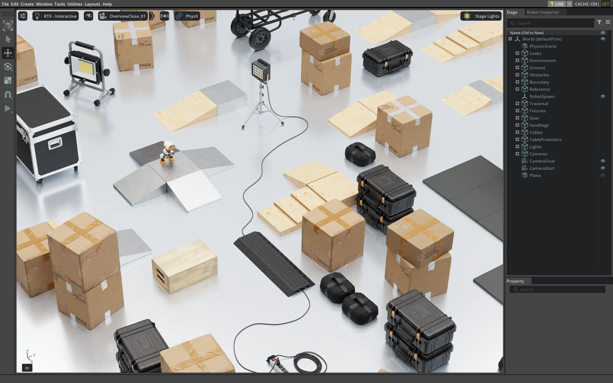
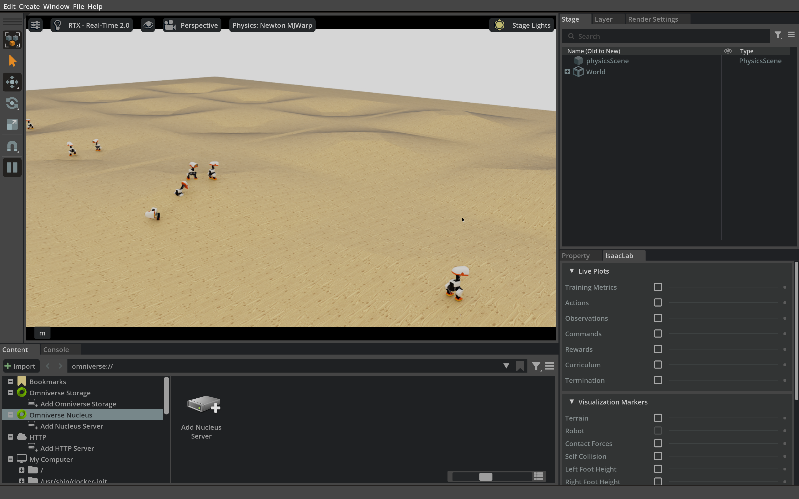
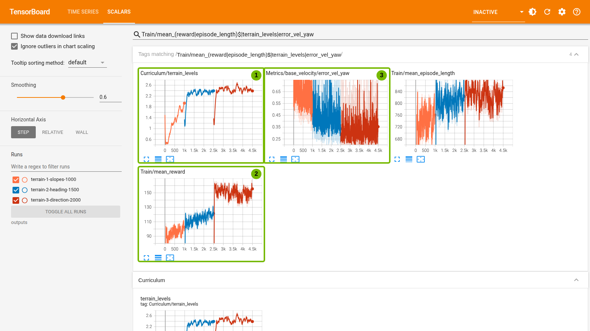
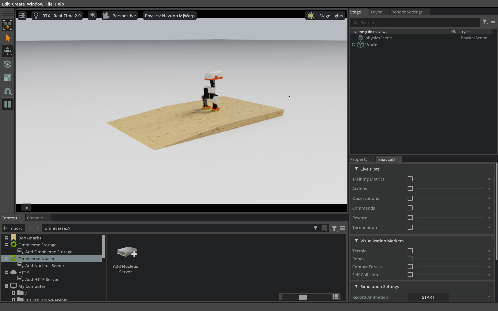
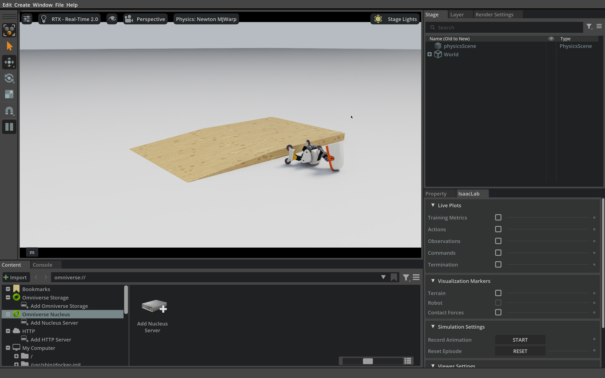

3.3 Reward design: walking steadily up and down slopes#
Learn to design rewards first: what a reward is, why it must be designed, and how to write and check one; then train walking and roller policies on random slopes and verify them on the same wedge ramp.
The 2026 GTC Berlin talk#
In the 2026 GTC Berlin talk, Microduck had to cross an obstacle course of ramps, platforms and props.


The Microduck obstacle course from the NVIDIA technical blog. Image: NVIDIA technical blog, Figure 6 ↗.
This section takes only the simplest task: walk up a wooden wedge, stay upright on top, then walk back down. How can reaching the top, staying there and not falling become feedback a policy can learn from? We design the rewards first, then train and verify.
Task and reward design#
A reward provides feedback at each training step; PPO uses accumulated reward to update the policy (see Section 3.1). A success criterion determines whether evaluation passes. One guides learning; the other checks the result.
Rewarding only success may give too little feedback; rewarding only uprightness may encourage standing still. Reward design breaks the task into learnable signals and uses weights to balance progress, stability and smoothness.
The six steps below do not depend on the robot; Section 3.4 uses them again to read community skills:
Write the acceptance test first. State the goal, time limit and failure conditions, and fix how you will evaluate.
List usable quantities. Note frame, units and source; the reward may read simulation truth, but policy inputs must be available on deployment.
Choose a shape. Bounded rewards for tracking a target, penalties for suppressing deviations, single events paid once.
Set the scale. Check weight signs, normalization scales and gates, and compare what each term actually contributes.
Look for loopholes. Can the policy score high without the task? Would ending early spare it penalties (when most steps are penalties, falling early “loses less”)?
Validate independently. Evaluate against the success criterion, ideally with seeds and scenes kept out of tuning; to learn what one term does, retrain without only that term from the same start, with an equal budget and paired seeds, and compare.
Variable meanings
- \(w_i\)
- Weight of reward term \(i\). A positive weight means “more is better”; a negative weight makes the term a penalty.
- \(g_i\)
- Gate between 0 and 1 that decides whether this term applies in the current state, for example rewarding forward motion only while a push is commanded.
- \(\phi\)
- Shape function that turns the normalized error into a reward value, for example the tracking kernel \(\exp(-z^2)\) or the squared penalty \(z^2\).
- \(e_i\)
- The error or physical quantity this term measures, with units, for example a velocity error (m/s).
- \(\sigma_i\)
- Scale in the same units as \(e_i\), saying how large an error counts as “clear”. Dividing by it makes the error dimensionless.
Shape \(\htmlData{sym=phi}{\phi}(\htmlData{sym=z_norm}{z})\) |
Weight |
Suits |
Watch out for |
|---|---|---|---|
Tracking kernel \(\htmlData{sym=exp}{\exp}(-\htmlData{sym=z_norm}{z}^2)\) |
Positive |
Bringing velocity or posture close to a target |
Bounded between 0 and 1; too small a scale gives almost always 0, too large hides the difference between good and poor |
Squared penalty \(\htmlData{sym=z_norm}{z}^2\) |
Negative |
Quantities that should be small, such as sideways slip or action change |
Unbounded, so a few outliers can dominate the total |
Clipped progress |
Positive |
Rewarding forward motion without encouraging runaway speed |
Looks only at speed, not at whether the direction leads to the target |
One-time event |
Positive or negative |
Take-off, landing, arrival, failure |
Must not be triggerable again and again |
Real code varies, but it can usually be split into what is read, how it is normalized, when it applies and how large its weight is.
The acceptance test for this section. A finite wooden wedge stands on a flat white floor: solid sides, a slope at the front and a 0.6 m wide platform on top. The same wedge tests both directions:
Uphill: start on the floor in front of the slope. The robot has arrived when its body is 0.15 m past the top of the ramp and both feet are on the platform (at least 0.06 m from the edge); it passes only if it then stays upright on the platform for at least 2 s and until the episode ends, without falling or dropping off an edge.
Downhill: start on the platform. The robot has arrived when its body is 0.25 m past the foot of the ramp and both feet are on the floor beyond it; it passes only if it then stays upright on the floor for at least 2 s and until the episode ends.
The forward command stops on arrival, so “walking on as commanded and dropping off the far side of the platform” does not count as a policy failure. As in Section 3.2, each duck first settles with locked joints at its start, and the lock is released after the policy's first output.
The check command first creates a flat white floor, then adds a wood-grain wedge with collision, keeping the original friction settings. Uphill runs start in front of the ramp foot; downhill runs start on the platform, facing the ramp foot.
Measure a baseline first. The official walking policy was trained on flat ground only. On this wedge it veers to one side at the start of the ramp going uphill and finally falls; going downhill it stops on the ramp and, within 20 seconds, neither arrives nor falls. Neither failure is “unable to walk”: uphill it loses direction and balance, downhill it stalls. So the report keeps arrival, falls and stalling apart; looking only at falls would miss the downhill stall.
A slope changes the relative height of foot and ground, the component of gravity along the surface and the usable friction: on a 10° ramp the gravity component down the slope is about 17% of the weight, so climbing needs more propulsion and descending needs more speed control. We do not hand-write an uphill gait; the training scenes and rewards must cover these variations instead. Newton computes gravity, contact and actuator response at every physics step, and Isaac Lab lets the same policy practise on many slopes in parallel.
Training on random slopes: practice inside the training distribution#
The domain randomization of Section 3.2 varies physical parameters such as friction, mass and delay; terrain randomization adds the shape of the ground to the random draw. The training terrain mixes flat ground with uphill and downhill slopes of many gradients. Isaac Lab's terrain curriculum adjusts the gradient step by step according to performance: environments that walk well move to steeper slopes and those that struggle move back to gentler ones; Curriculum/terrain_levels in TensorBoard records the average level.
These random slopes are the training distribution: the policy practises climbing, descending and keeping its balance on slopes there. The complete layout of the fixed wedge used later (a ramp leading to a platform) does not appear in the training terrain, so results on the wedge test these skills in a separate verification scene rather than scoring the policy inside its training scene.
Training does not start from scratch: the official ONNX network weights and normalization parameters are copied as the starting point of the new policy, while the value network and optimizer start fresh. Before training, check that the new policy network and the original ONNX give the same output for the same observation, so an interface error is not mistaken for a need for more training.
Swipe horizontally to see the full diagram
Select a module; its explanation appears here.
1Write the test
Fix the criteria before training. Record reaching, holding and falls separately, and report uphill and downhill separately.
2Random-slope training
Parallel environments sample random slopes and the terrain curriculum adapts the difficulty; the flat samples keep flat walking in practice.
3Wedge verification
The complete wedge layout is not in the random training terrain; old and new policies are compared on the same wedge with the same test. A stricter independent test would also keep seeds and layouts out of tuning.
Run the command below in the course container shell from Section 1.3 (to reopen it, see Section 1.3) to continue training for 1000 iterations with 256 environments; --show opens Isaac Sim so you can watch the ducks practise on different tiles at once.
python3 scripts/run.py train-terrain \
--model models/walk.onnx \
--num-envs 256 --iterations 1000 \
--show \
--output outputs/terrain-training-01


The slope-walking training window opened by --show, at the start of training. The picture shows the randomly generated training terrain, not the wedge used for verification later.
Watch for a while and stop with Ctrl+C. Training saves a checkpoint every 250 iterations with a testable export (for example export-model_250/policy.onnx); outputs/terrain-training-01/exported/policy.onnx appears only after all 1000 iterations. The verification below uses the course terrain model by default, so you do not need to wait for your training.
This command is not how the course model was trained. The fixed model models/terrain-walk.onnx comes from three consecutive stages: 1000 iterations (the same settings as the command above, about 8 minutes on a DGX Spark without a window), 1500 more (stronger angular-velocity tracking, fixed nominal physics parameters), and 2000 more (adding the turning reward of the next part). That training also used a different contact configuration from the full-body collision model of the current command. Your 1000 iterations are therefore a new experiment, and you should not expect them to reproduce the fixed model's results.


TensorBoard record of the three training stages of the fixed terrain model (logs in datasets/terrain-ppo/); the horizontal axis is the cumulative iteration, and the green boxes and numbers are course annotations. ① In the first stage the terrain level rises from about 0.6 to around 2.0 as the curriculum moves well-performing environments to steeper tiles; ② each continuation changes the reward settings, so the return jumps and values from different stages cannot be compared directly; ③ after the turning reward is added in stage three, the turning error falls to around 0.25–0.35 rad/s, with large fluctuations.
Key code parameters
--model. Which file a program loads is decided only by--model.train-terrain --model models/walk.onnxstarts training from the official walking policy;terrain --model models/terrain-walk.onnxruns that file at every control step during verification. Roller commands also add--locomotion rollers, which swaps the robot in the scene for the roller-foot version.--output. Must be a folder underoutputs/that does not exist yet; existing folders and paths undermodels/are refused. A policy you train must be named explicitly with--modelfor verification.datasets/.terrain-ppo/holds the configurations and TensorBoard logs of the three training stages of the fixed terrain model, andterrain-rollers-ppo-experiment/holds the roller training record of this page.Scenes. The training terrain is generated by the terrain configuration in
lab/train_terrain.pyand the verification wedge from theterraincommand's arguments (such as--slope); neither is read from a scene file.
Reducing drift with a turning reward#
Before stage three the policy could already step up a +5° ramp, but it slowly turned while walking and drifted away from the goal. The forward-velocity reward is computed in the body frame, so a body that has turned can still be “walking well toward its own front”. Stage three therefore adds a separate body-z turning reward:
Variable meanings
- \(r_{\omega}\)
- Turning-tracking reward, 1 at zero error and falling smoothly toward 0 as the error grows.
- \(\exp\)
- Exponential function, turning a squared error into a smooth reward between 0 and 1.
- \(\omega_z\)
- Actual angular velocity about the body \(z\) axis, read from the simulation state during training (rad/s); when the body tilts it is not necessarily the world yaw rate.
- \(\omega_z^*\)
- Angular velocity requested by the turning command (rad/s); 0 when walking straight.
- \(\sigma\)
- Tolerance scale of the turning error, here 0.15 rad/s.
\(\htmlData{sym=omega_z}{\omega_z}\) is the actual angular velocity about the body z axis and \(\htmlData{sym=omega_cmd}{\omega_z^*}\) the turning command, 0 when walking straight. At zero error the reward is 1; at an error of \(\htmlData{sym=sigma}{\sigma}\) = 0.15 rad/s it drops to 0.37, and at 0.30 rad/s only 0.02 remains. Only the z component is used because walking itself involves roll and pitch sway, and putting all three axes into a narrow tracking kernel would lower the score of a normal gait.
1Reward function entry
Computed for all parallel environments at once; the docstring says it does not judge the roll and pitch of the gait.
def yaw_rate_tracking(env, std=0.15):
"""Reward turning accuracy independently of gait roll and pitch motion."""
import torch2Read actual and target turning rates
Read the body-frame angular velocity and the turning component of the velocity command (column 3).
velocity = env.scene["robot"].data.root_link_ang_vel_b
velocity = getattr(velocity, "torch", velocity)
target = env.command_manager.get_command("base_velocity")[:, 2]3Compute a bounded reward
Take only the z component of the angular velocity, subtract the command, divide by std, square and take the negative exponential, matching the formula above.
return torch.exp(-((velocity[:, 2] - target) / std).square())In training this term joins the reward manager with weight 4.0; the same stage also lowers the weight of the original three-axis angular-velocity term to 0.5 and sets the linear-velocity term to 3.0.
It constrains turning speed without correcting accumulated heading error. Standing still also earns full marks, so it needs progress, posture and smoothness terms alongside it.
The final model passed the wedge tests below. Several weights and the training budget changed together, so the turning reward's contribution remains untested. Use step 6 to design a controlled comparison.
Comparing on the same wedge#
Old and new policies are compared with the same wedge, test and start settings. The two comparison videos below are single runs each, played in sync on simulation time.
Uphill +5° (first 15 seconds): the official walking policy (top) veers to one side at the front of the ramp and falls at about 12.1 s; the terrain policy (bottom) reaches the platform at about 8.9 s and stays on it.
Downhill −5° (20 seconds): the official walking policy (top) stops on the ramp, neither arriving nor falling; the terrain policy (bottom) walks down at about 8.3 s and then stands on the floor.
Run the command below inside the container; by default it loads the course terrain model. After your own training, change --model to outputs/terrain-training-01/exported/policy.onnx and run again with a new output folder. Five environments run on the same wedge without colliding; the window shows only the first.
python3 scripts/run.py terrain \
--model models/terrain-walk.onnx \
--slope 5 --num-envs 5 --seconds 20 --seed 49001 \
--output outputs/terrain-evaluation-up-05


The Isaac Sim window when the course ran this command in the container: the duck has walked onto the platform and stopped at the target.
The terminal prints passed, fell, reached_goal, held_seconds and the velocity RMS error for each environment, and the full result goes to report.json in the output folder. For downhill, change --slope to -5 and use a new output folder. The course measured these two commands, with times counted from when the policy takes over (the first 2 s are standing):
Direction |
Passed |
Fell |
Reached goal |
Held after arrival |
Velocity RMSE while moving |
|---|---|---|---|---|---|
Uphill +5° |
5/5 |
0/5 |
8.9–9.0 s |
11.0–11.1 s, still on the platform at 20 s |
about 0.11 m/s |
Downhill −5° |
5/5 |
0/5 |
8.2–8.3 s |
11.7–11.8 s, still standing on the floor at 20 s |
about 0.09 m/s |
Keep three points in mind when reading this table:
Only ±5°, five environments per direction. It describes the conditions tested, not a general success rate, and it is not an independent held-out test. Steeper slopes need their own measurements; change
--slopeto ±10 and ±15 in turn (--headlessruns faster without a window). See the evaluation summary ↗ for per-environment results on this wedge.Standing uses the course's head hold. With a zero velocity command (the 2 s before starting and after arrival) this policy lowers its head a long way. Only in those two periods does the check script replace the targets of the 4 head servos with the standing-pose angles (pitch raised by a further 0.2 rad); leg actions always come from the policy. “Held after arrival” is therefore achieved by the policy together with this head hold.
For this section only. Section 2.1 and Part 4 keep using the original walking policy. A model you train must report flat ground, uphill and downhill under the same conditions; a gain on slopes that loses flat walking is not a qualified replacement.
Window speed and recording
The verification window draws at 960×540 and refreshes every 2 control steps so the motion is close to real time; physics still runs at 200 steps per second and the policy at 50 per second. On a DGX Spark, the 20-second test with 5 environments takes about 20 seconds overall. For a sharper picture, prefix the command with MICRODUCK_VIEWPORT_RESOLUTION=1920x1080 (slower); --record (one environment only) records frame by frame on simulation time at the same quality as the window.
Check your understanding
The training terrain already contains many slopes. Why verify separately on the wedge?
Show explanation
The random slopes are the training distribution and the complete wedge layout does not appear in the training terrain, so the test checks whether skills learned on random slopes carry over to this specific layout rather than repeating moves in the training scene. Old and new policies are compared on the same wedge with the same test; if you keep tuning on the verification results, it stops being an independent test, and a stricter approach keeps seeds and layouts out of tuning.
Rollers: a rising reward does not complete the task#
The purpose of this part is not to provide a working slope roller model but to show a counter-example: the training return rises sharply and the acceptance test still fails. The course currently has no slope roller model that passes the wedge verification.
Four wheels change support and resistance: climbing needs continuous propulsion from leg motion, and descending can still accelerate with the command released. The acceptance test keeps the same wedge and the same reach-and-hold criteria; with a push of 0 the rollers still glide, so after arrival a course brake regulator gives a small reverse push from the forward speed, shared by all roller models.
The walking reward contains terms such as foot height and air time that would judge the roller blocks as if they were soles; a roller command means a push amount rather than metres per second, so velocity tracking makes no sense either. Roller training therefore keeps only the general terms (upright posture, smooth actions, joint limits and body angular velocity), adds three roller-specific terms and reuses the turning term above (weight 1.0):
Specific term |
Shape |
Effect |
Weight |
|---|---|---|---|
Push |
Gated clipped progress |
Rewards forward body speed in proportion to the push amount, with no extra credit above 0.5 m/s |
+3 |
Coast |
Squared penalty, active only when the push is 0 |
Penalizes forward and backward sliding without a push |
−1 |
Drift |
Squared penalty |
Penalizes sideways body speed |
−2 |
The complete reward code is in lab/course_labs/train_terrain_rollers.py ↗. The command below starts from the official roller model and continues PPO with these rewards on the same random slopes; the value network trains from scratch.
python3 scripts/run.py train-terrain \
--locomotion rollers \
--model models/official-browser/rollers.onnx \
--num-envs 256 --iterations 1000 --seed 47001 \
--show \
--output outputs/terrain-rollers-training-01

The roller slope-training window opened by --show, at the start of training; the picture shows random training terrain, not the verification wedge.
Watch for a while and stop with Ctrl+C; after all 1000 iterations the exported policy is at outputs/terrain-rollers-training-01/exported/policy.onnx. The verification command below tests the official roller model by default, that is, the baseline:
python3 scripts/run.py terrain \
--locomotion rollers \
--model models/official-browser/rollers.onnx \
--slope 5 --seconds 20 --num-envs 5 \
--seed 55011 \
--output outputs/rollers-slope-01


Official roller model (baseline): the window when the course ran this command in the container. The duck veers right while climbing and drops off the right edge of the wedge.
To test a trained policy, change --model to datasets/terrain-rollers-ppo-experiment/exported/policy.onnx (the training the course completed) or to your own exported/policy.onnx, with a new output folder.
The counter-example after training. The course ran the training command above for all 1000 iterations on a DGX Spark without a window (about 8.8 minutes, recorded in datasets/terrain-rollers-ppo-experiment/).
Trained roller policy (counter-example) · 256 environments · 1000 iterations
Training phase 525.8 sMean episode return
Mean terrain level
Hover, tap or Tab to a point to inspect its logged value.
View all values
| Iteration | Mean episode return | Mean terrain level |
|---|---|---|
| 1 | -0.179899 | 1.456869 |
| 11 | 4.581765 | 1.125000 |
| 21 | 10.381079 | 1.090983 |
| 31 | 14.866784 | 1.110189 |
| 41 | 20.392378 | 1.140300 |
| 51 | 31.670181 | 1.250488 |
| 61 | 30.260370 | 1.347982 |
| 71 | 25.978621 | 1.307617 |
| 81 | 30.382683 | 1.254720 |
| 91 | 34.652992 | 1.165690 |
| 101 | 33.576988 | 1.103516 |
| 111 | 35.522419 | 1.023438 |
| 121 | 36.787903 | 0.914225 |
| 131 | 38.074265 | 0.818359 |
| 141 | 36.971607 | 0.715007 |
| 151 | 32.414555 | 0.615560 |
| 161 | 30.234884 | 0.515137 |
| 171 | 36.639915 | 0.445964 |
| 181 | 39.711601 | 0.387044 |
| 191 | 38.621265 | 0.337240 |
| 201 | 32.654026 | 0.300781 |
| 211 | 36.300041 | 0.238281 |
| 221 | 36.854412 | 0.166178 |
| 231 | 33.981266 | 0.129557 |
| 241 | 37.988224 | 0.128906 |
| 251 | 41.839741 | 0.093750 |
| 261 | 37.007008 | 0.058594 |
| 271 | 40.564766 | 0.039062 |
| 281 | 41.823292 | 0.039062 |
| 291 | 41.202576 | 0.030436 |
| 301 | 42.908535 | 0.027344 |
| 311 | 41.018261 | 0.023438 |
| 321 | 38.868526 | 0.023438 |
| 331 | 39.264530 | 0.023438 |
| 341 | 45.264629 | 0.015625 |
| 351 | 42.945457 | 0.011719 |
| 361 | 42.558167 | 0.003906 |
| 371 | 45.566311 | 0.007812 |
| 381 | 45.185772 | 0.007812 |
| 391 | 44.470810 | 0.003906 |
| 401 | 42.331966 | 0.003906 |
| 411 | 45.435867 | 0.000000 |
| 421 | 44.431923 | 0.003906 |
| 431 | 44.732220 | 0.000000 |
| 441 | 42.737949 | 0.000000 |
| 451 | 45.433544 | 0.003906 |
| 461 | 45.585457 | 0.003906 |
| 471 | 42.989613 | 0.003906 |
| 481 | 43.091766 | 0.007812 |
| 491 | 45.050522 | 0.003906 |
| 501 | 43.264900 | 0.003906 |
| 511 | 46.074631 | 0.007812 |
| 521 | 46.175797 | 0.007812 |
| 531 | 48.197155 | 0.007812 |
| 541 | 49.897160 | 0.015625 |
| 551 | 48.687504 | 0.015625 |
| 561 | 48.543011 | 0.023438 |
| 571 | 48.362915 | 0.023438 |
| 581 | 49.864128 | 0.012370 |
| 591 | 47.779549 | 0.015625 |
| 601 | 47.453964 | 0.019531 |
| 611 | 48.029816 | 0.015625 |
| 621 | 46.975643 | 0.011719 |
| 631 | 48.881264 | 0.011719 |
| 641 | 46.307896 | 0.007812 |
| 651 | 47.786903 | 0.003906 |
| 661 | 49.881676 | 0.007812 |
| 671 | 47.868408 | 0.011719 |
| 681 | 45.942696 | 0.003906 |
| 691 | 46.995068 | 0.003906 |
| 701 | 46.356022 | 0.003906 |
| 711 | 46.726536 | 0.003906 |
| 721 | 46.998989 | 0.011719 |
| 731 | 47.826942 | 0.015625 |
| 741 | 48.786194 | 0.007812 |
| 751 | 44.517090 | 0.007812 |
| 761 | 44.905041 | 0.003906 |
| 771 | 41.866623 | 0.000000 |
| 781 | 40.755043 | 0.000000 |
| 791 | 47.189041 | 0.003906 |
| 801 | 49.155872 | 0.003906 |
| 811 | 47.250870 | 0.007812 |
| 821 | 47.364967 | 0.007812 |
| 831 | 47.218681 | 0.007812 |
| 841 | 46.303848 | 0.007812 |
| 851 | 44.467552 | 0.003906 |
| 861 | 42.857544 | 0.003906 |
| 871 | 46.347919 | 0.007812 |
| 881 | 48.314949 | 0.003906 |
| 891 | 45.145828 | 0.004069 |
| 901 | 43.177528 | 0.007812 |
| 911 | 41.566273 | 0.003906 |
| 921 | 42.306335 | 0.003906 |
| 931 | 42.569767 | 0.003906 |
| 941 | 45.856628 | 0.007812 |
| 951 | 49.173672 | 0.007812 |
| 961 | 48.804314 | 0.003906 |
| 971 | 48.026894 | 0.007812 |
| 981 | 46.632973 | 0.015625 |
| 991 | 47.892323 | 0.011719 |
| 1000 | 47.547089 | 0.019531 |
+5° wedge, 5 environments |
Passed |
Fell |
What happened |
|---|---|---|---|
Official roller model (baseline, the test window above) |
0/5 |
5/5 |
Four veer right and drop off a side of the wedge; one briefly reaches the platform goal at 5.0 s and then falls too |
Trained roller policy (counter-example, the curves above) |
0/5 |
1/5 |
Four never climb and end about 0.5–1.1 m behind their start; one climbs the wedge at an angle and drops off a side |
See the evaluation summary ↗ for per-environment results on this wedge.
Return rises and falls become less frequent, but the result is still 0/5. The terrain level drops almost to zero, so late training mainly uses nearly flat tiles. Four evaluation trials never climb; fewer falls alone do not show task improvement.
Possible loopholes: standing still may earn enough reward, while the push reward does not check progress toward the platform. Change one term at a time with equal budgets and paired seeds, then evaluate against the wedge's success criterion.
This is a negative reward-design example: it only shows that this reward set did not learn to climb in this training run. It does not prove that rollers are generally harder, nor that rollers cannot learn to climb.
Check your understanding
One training run's mean return rises from near 0 to 47, and the episode length approaches its limit. Can you say it learned to climb on rollers?
Show explanation
No. The return only shows that the policy got better at collecting the scores of this reward set; that is exactly what happened with the roller training on this page: the return rose sharply, yet the +5° wedge verification was 0/5, with most robots stopping behind their start. Evaluate with an acceptance test fixed before training (ideally with seeds and scenes kept out of tuning), and check indicators such as the terrain level that show what training actually practised.
Summary#
The reward is the training signal, the success criterion is the acceptance test; write them separately and write the test first.
Random slopes are the training distribution and the fixed wedge is a separate verification scene; conclusions come from the latter and apply only to the conditions tested.
The fixed terrain model passed 5/5 each way on the ±5° wedge (five environments per direction). The turning reward constrains turning speed and does not correct accumulated heading; without a comparison experiment, the pass cannot be credited to it or to any other single change.
The roller return rose sharply and the acceptance test was still 0/5: a reward curve cannot replace the acceptance test.
Section 3.4 reads the reward code community authors wrote for the one-leg stand, basketball balance and backward glide, and uses the same six steps to judge their goals, implementation and limits.